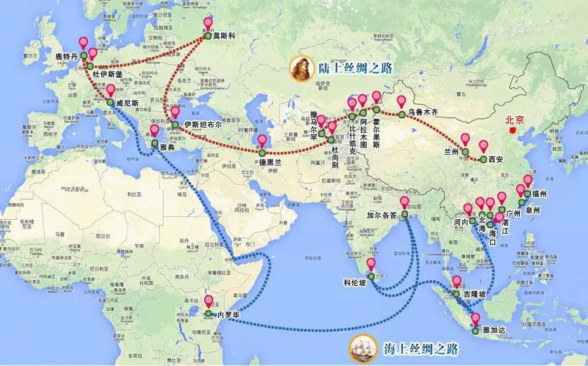

development history
2013年9月和10月，中国国家主席习近平在出访中亚和东南亚国家期间，先后提出共建“丝绸之路经济带”和“21世纪海上丝绸之路”的重大倡议，得到国际社会高度关注。
中国提出两个符合欧亚大陆经济整合的大战略：
两者合称——“一带一路”倡议。
丝绸之路经济带战略涵盖东南亚经济整合、涵盖东北亚经济整合，并最终融合在一起通向欧洲，形成欧亚大陆经济整合的大趋势。21世纪海上丝绸之路经济带战略从海上联通欧亚非三个大陆和丝绸之路经济带战略形成一个海上、陆地的闭环。
丝绸之路经济带圈定：新疆、重庆、陕西、甘肃、宁夏、青海、内蒙古、黑龙江、吉林、辽宁、广西、云南、西藏13省（直辖市）。
21世纪海上丝绸之路圈定：上海、福建、广东、浙江、海南5省（直辖市）。
共计18个省、自治区、直辖市。

1、北线A：北美洲（美国，加拿大）——北太平洋——日本、韩国——日本海——海参崴（扎鲁比诺港，斯拉夫扬卡等）——珲春——延吉——吉林——长春（即长吉图开发开放先导区）——蒙古国——俄罗斯——欧洲（北欧，中欧，东欧，西欧，南欧）
2、北线B：北京——俄罗斯——德国——北欧
3、中线：北京——郑州——西安——乌鲁木齐——阿富汗——哈萨克斯坦——匈牙利——巴黎
4、南线：泉州——福州——广州——海口——北海——河内——吉隆坡——雅加达——科伦坡——加尔各答——内罗毕——雅典——威尼斯
5、中心线：连云港——郑州——西安——兰州——新疆——中亚——欧洲